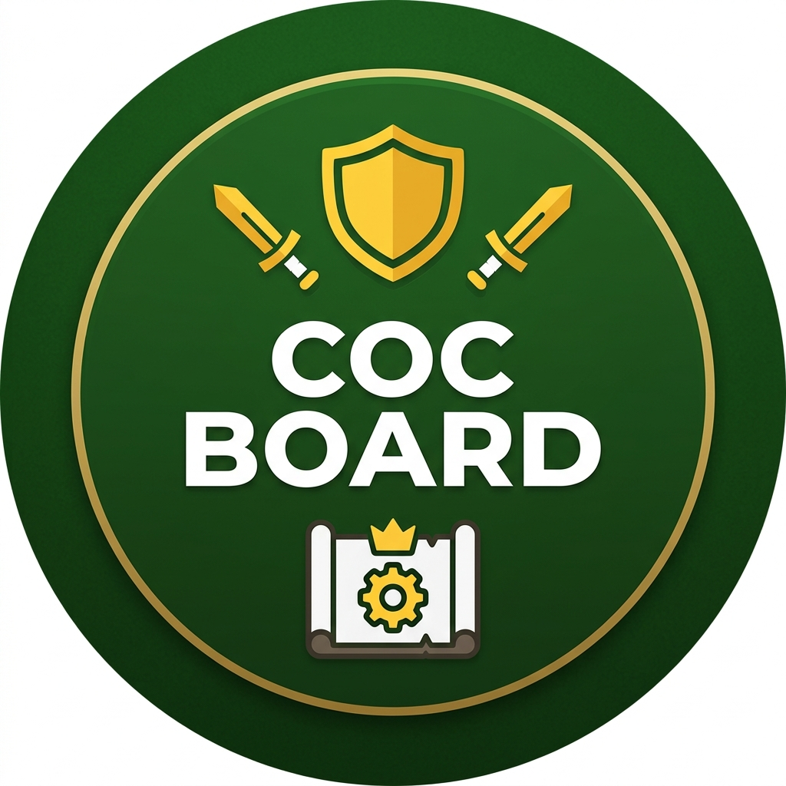
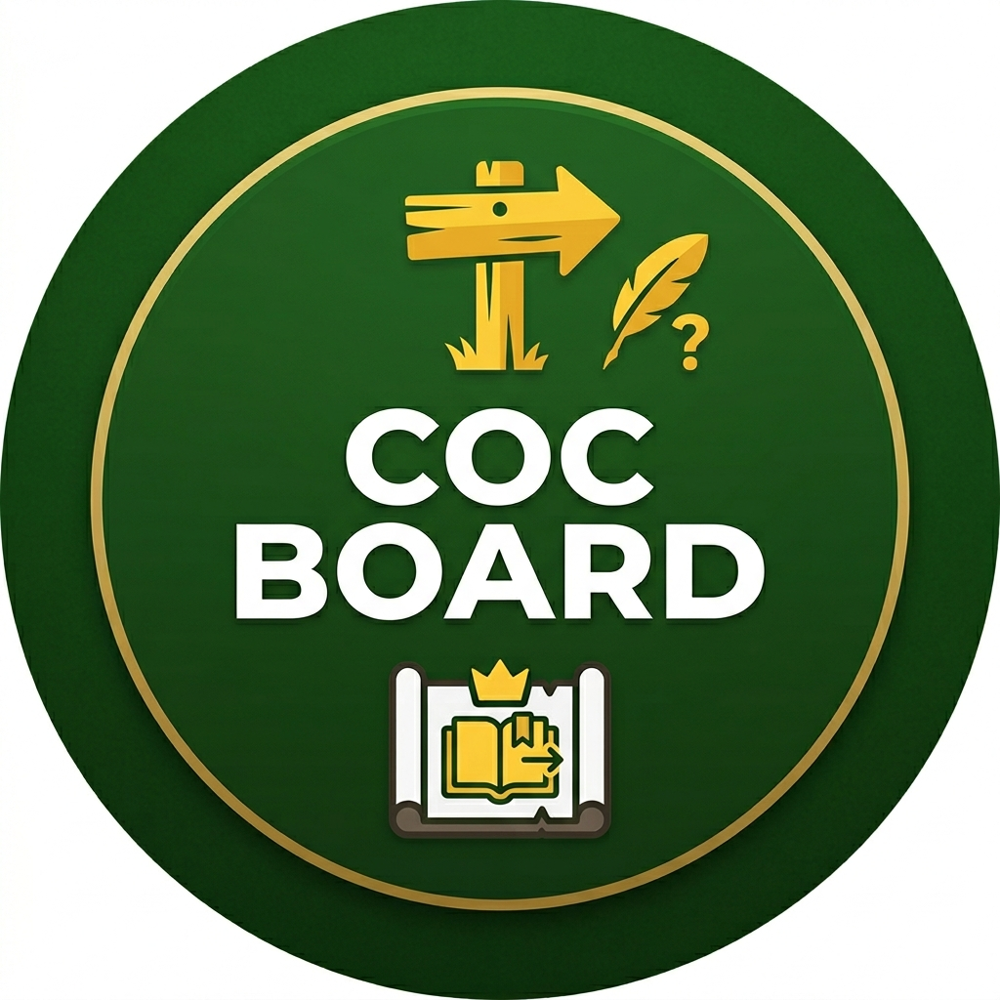

Cosa puoi fare subito

Anche senza registrarti hai accesso a:
- Community — chat globale inter-clan e annunci di reclutamento
- Cerca — qualsiasi villaggio per #tag o clan per nome
- Classifica — top trofei Italia e mondo in tempo reale
- Guida e tutorial — sei già qui!
Registrarsi o accedere
Apri il bot in chat privata e tocca Registrati o Accedi.
- Registrati — inserisci la tua chiave API di Clash of Clans (trovata in-game: Impostazioni → Altro → Accesso API) per collegare l'account CoC al profilo CoCBoard.
- Accedi — usa il tuo username CoCBoard, il tuo #tag villaggio o la tua email CoCBoard.
Una volta loggato sblocchi:
- Il tuo clan — roster, info clan, il tuo profilo personale
- CWL live — andamento della Clan War League in corso con statistiche per turno
- Guerra live — panoramica attacchi, confronto eroi, planner e anteprima in tempo reale
- Registro guerre — storico battaglie classiche del clan
- Bonus CWL — classifica e storico assegnazioni bonus stagionali
- Mini App — dashboard web direttamente da Telegram (senza reinserire la password!)
Usare il bot nel gruppo del clan
Nel gruppo usa sempre /cocboard per aprire il menù — evita conflitti con altri bot che usano /start.
Da ospite nel gruppo puoi già cercare giocatori, vedere la classifica e consultare i dati del clan collegato (membri, bonus, war log).
Dopo il login in chat privata, tornando nel gruppo sblocchi il tuo profilo e tutte le funzioni autenticate.
Collegare il clan al gruppo
Solo il Capo o un Co-Capo può collegare il clan:
- Apri il bot in chat privata
- Vai su Aggiungi a canale/gruppo nel menù
- Copia il TOKEN fornito (valido circa 1 ora)
- Nel gruppo digita:
/linkclan TOKEN
Si possono collegare fino a 3 gruppi o canali per clan.
Per scollegare: /unlinkclan (stesso utente o admin del gruppo).
Community
Chat globale inter-clan
Una stanza di testo condivisa tra clan diversi, organizzata in finestre temporali da 5 minuti.
- Per entrare: profilo CoCBoard verificato (✅) oppure nome e #tag manuale
- Regole: niente link, niente tag in-game nel corpo del messaggio, nessuna emoji nel formato manuale
- Rate limit: massimo 12 messaggi al minuto
- Per uscire: tocca Esci oppure usa
/esci_chat_global
Reclutamento
Pubblicizza il tuo clan o cerca un posto dove entrare!
- Pubblica adesso — invia lo stemma del tuo clan direttamente dalla API CoC
- Messaggio rapido — testo libero per un annuncio veloce
- Annuncio guidato — procedura passo-passo per un annuncio completo
- Gli annunci approvati restano visibili in Annunci attivi e scadono dopo 24 ore
Guerra live e CWL live
Guerra live — sezioni disponibili
- Panoramica — stato generale della guerra con riepilogo attacchi eseguiti e mancanti in tempo reale; lista chi ha ancora attacchi aperti con avviso urgente nelle ultime 4 ore
- Anteprima — mostra direttamente tutti gli attacchi compiuti dal tuo clan e le difese subite, senza dover cliccare i pulsanti dei due clan
- Confronto eroi — confronto dei livelli eroi di tutti i membri di entrambi i clan; i dati vengono caricati in tempo reale dall'API (breve attesa)
- Planner — suggerimento target ottimale per ogni attaccante con attacchi rimanenti; assegnazione esclusiva (ogni base è assegnata a un solo player)
- Roster Noi / Attacchi Avversario — lista paginata dei membri con dettaglio attacchi
CWL live — sezioni disponibili
- Panoramica — classifica corrente della CWL con stelle e distruzione per round
- Gruppo — tabella tutti i clan del gruppo CWL con posizione e punteggio
- Roster — lista paginata dei partecipanti CWL del tuo clan
- Turni — dettaglio round per round con risultati e statistiche attacchi
Bonus CWL
I Capi e Co-Capi possono assegnare i bonus stagionali direttamente dal bot.
- Hall of Fame — classifica storica di chi ha ricevuto più bonus nel tempo
- Storico per stagione — scorri le stagioni passate e vedi i riceventi
Assegnazione bonus
Visibile solo a Capo, Co-Capo e Admin.
- Manuale — abilita/disabilita singolo giocatore con toggle
- Assistita — scegli quanti bonus assegnare e il criterio:
Standard · Strict · Solo peso TH · Solo score
Il bot calcola il ranking in automatico → confermi prima di applicare
Il punteggio si basa su stelle, distruzione media e partecipazione agli attacchi CWL. Chi ha già ricevuto il bonus il mese scorso parte da punteggio 0 (anti-duplicati).
Mini App (dashboard web)

Tocca il pulsante (web) o Mini App per aprire la dashboard CoCBoard direttamente da Telegram.
- In chat privata: si apre come Mini App nativa Telegram (senza uscire dall'app)
- In gruppo: si apre nel browser, ma se hai già fatto login dal bot non ti chiede di nuovo la password
Sezioni disponibili: Membri, CWL live, Registro guerre, Bonus, Cerca, Classifiche, Il tuo profilo.
Notifiche guerra (gruppi collegati)
Nei gruppi collegati al clan puoi attivare avvisi automatici ogni 60 secondi. Gestisci tutto da Gestione avvisi nel menù del gruppo (visibile a Capo/Co-Capo/Admin).
- Guerra classica — countdown, attacchi mancanti con lista player, recap finale, mismatch TH
- CWL — avvisi durante la Clan War League
- Raid Capitale — promemoria apertura e chiusura
- Giochi del Clan — notifiche evento attivo
Supporto
Hai un problema o una domanda?
- Usa
/assistenzaoppure tocca Contatta amministratore nel menù per aprire un ticket - Puoi scrivere testo + fino a 2 immagini; il team risponde nella stessa conversazione privata
- Il ticket viene preso in carico dallo staff e puoi seguirne lo stato direttamente in chat
Comandi disponibili
Chat privata
| Comando | Cosa fa |
|---|---|
/start · /cocboard | Apre il menù principale |
/cerca | Cerca villaggio o clan |
/classifica | Classifiche trofei |
/assistenza | Apri ticket supporto |
/adminbot | Pannello staff bot (admin/moderatori) |
/esci_chat_global | Esci dalla chat globale |
/annulla_reclutamento | Annulla bozza reclutamento in corso |
/cancel | Annulla operazione corrente (login, registrazione) |
Gruppo / canale
| Comando | Cosa fa |
|---|---|
/cocboard | Apre il menù (usa questo, non /start) |
/cerca | Cerca villaggio o clan |
/classifica | Classifiche trofei |
/assistenza | Apri ticket (risposta in privato) |
/linkclan TOKEN | Collega il clan al gruppo (Capo/Co-Capo) |
/unlinkclan | Scollega il clan dal gruppo |
/coc_off | Disattiva bot in questa chat (admin) |
/coc_on | Riattiva bot in questa chat (admin) |
/coc_status | Stato attuale del bot nella chat |